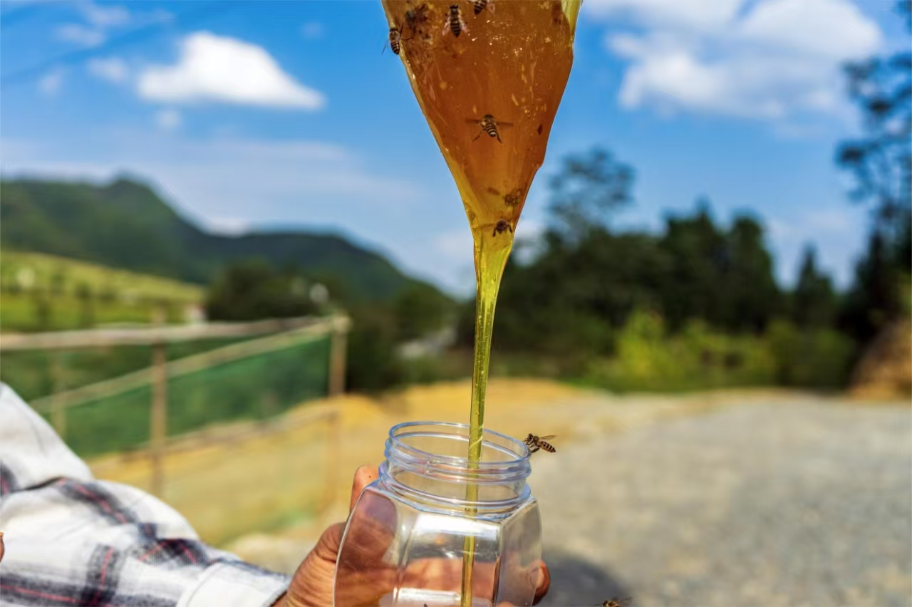
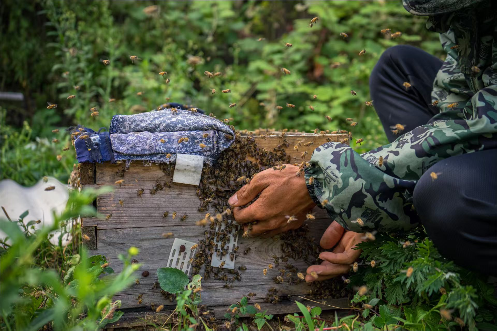
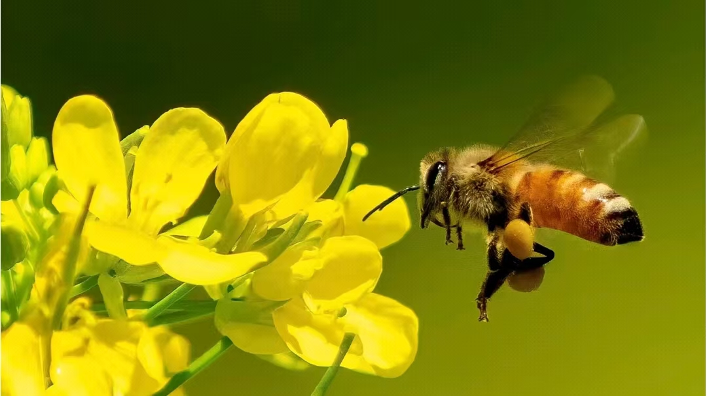
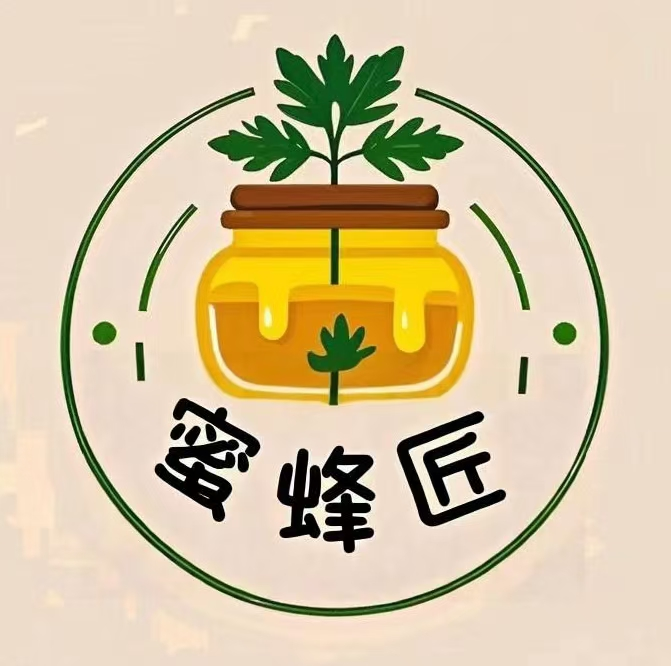
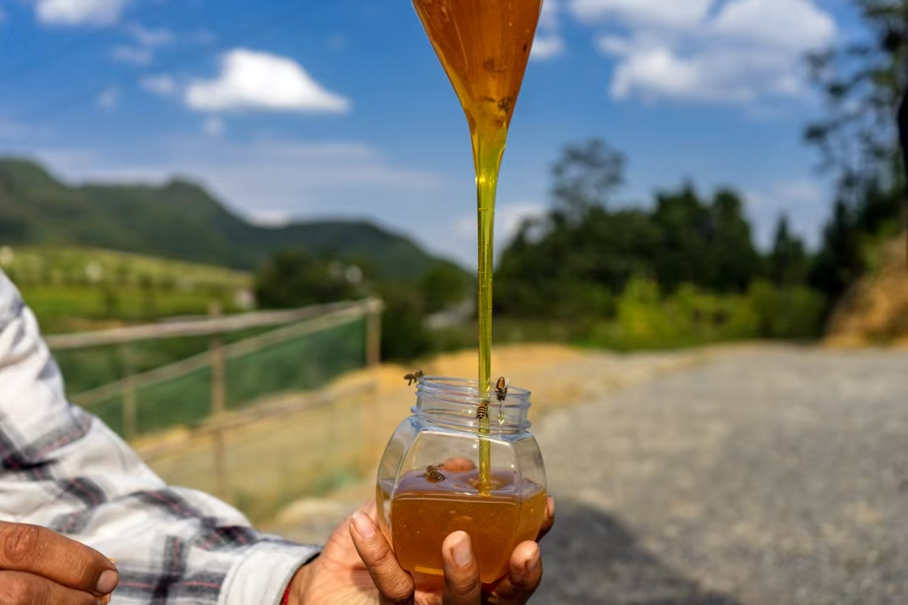

解读千年养蜂智慧，溯源非遗传统技艺。🐝我们是由高校学生组织的一只队伍，旨在学习古老的蜜蜂文化圈，例如，养蜂、蜂灸等技艺，弘扬和传承这些非遗技艺。 让每一滴非遗蜂蜜都流淌着山河岁月的故事，用最纯粹的甘甜唤醒文化记忆，以匠人之心守护这份来自大自然的甜蜜馈赠。🍯
🐝我们是由高校学生组织的一只队伍，旨在学习古老的蜜蜂文化圈，例如，养蜂、蜂灸等技艺，弘扬和传承这些非遗技艺。
让每一滴非遗蜂蜜都流淌着山河岁月的故事，用最纯粹的甘甜唤醒文化记忆，以匠人之心守护这份来自大自然的甜蜜馈赠。🍯

解读千年养蜂智慧，溯源非遗传统技艺。
welcome to mifengjiang|蜜蜂匠欢迎您！